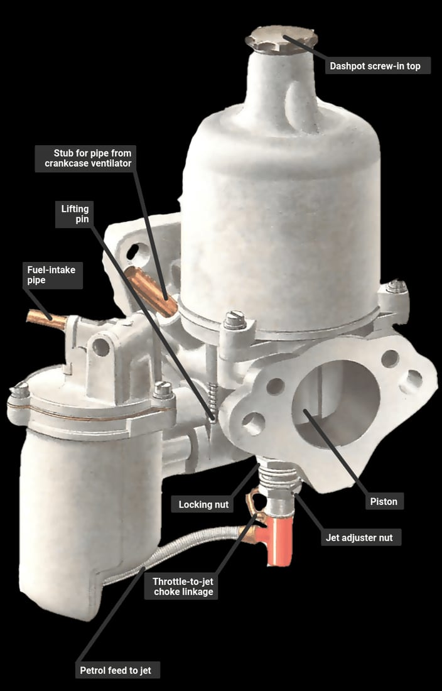

In de wereld van klassieke auto's en motoren is er een naam die synoniem staat voor prestatie en vakmanschap: SU carburateurs. Deze iconische carburateurs hebben decennialang hun stempel gedrukt op de autogeschiedenis en de harten van liefhebbers over de hele wereld veroverd. Laten we eens dieper ingaan op de betovering van SU carburateurs.
Het begin van SU carburateurs
SU, wat staat voor Skinner's Union, is een Brits bedrijf met een rijke geschiedenis in de productie van carburateurs. De oorsprong van SU gaat terug tot het begin van de 20e eeuw, en sindsdien hebben ze een reputatie opgebouwd als producenten van hoogwaardige carburateurs die zowel prestatie als betrouwbaarheid bieden.
De rol in de autogeschiedenis
SU carburateurs speelden een cruciale rol in de autogeschiedenis en werden gebruikt in enkele van de meest iconische Britse auto's. Onder andere:
- MG's en de klassieke Mini
- Jaguar E-type, XJ en XJS
- De iconische Lotus Elan
- Diverse Land Rovers en Defenders
- Triumph TR6, Morris Minor en Austin Healey
- Voertuigen van Rolls-Royce, Bentley, Rover, Riley, Turner en het Zweedse Volvo
De liefde voor SU carburateurs
SU carburateurs hebben een speciale plaats in het hart van autoliefhebbers. Hun karakteristieke geluid en soepele gasrespons roepen nostalgische gevoelens op en herinneren ons aan een tijdperk waarin autorijden nog een ware passie was.
Kortom, SU carburateurs blijven een icoon in de wereld van klassieke voertuigen. Ze vertegenwoordigen de perfecte balans tussen prestaties en eenvoud en zullen altijd geliefd zijn bij degenen die de charme van vervlogen tijden koesteren.
Bij Carburateur Service Nederland komen er geregeld SU carburateurs op de werkbank. Vraag hieronder vrijblijvend je SU revisie aan.